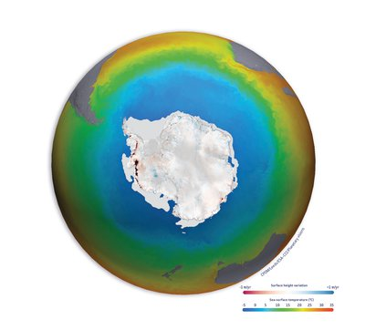
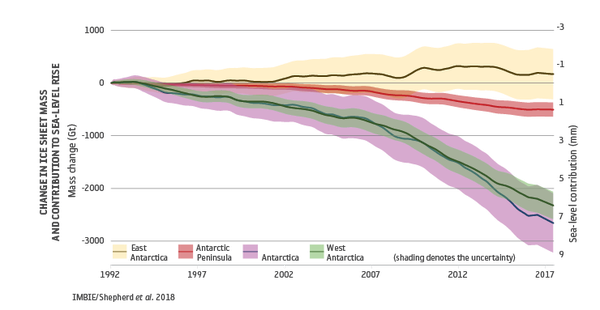

Climate is not the same as weather, but the two phenomena are closely related. While weather refers to short-term conditions that can change quickly, climate determines the long-term character of a given place, for instance, whether it is temperate or tropical. The relationship between weather and climate is crucial: the former is subordinate to the latter. Climate determines temperatures, weather diversity, the traits of winters, rainfall totals, as well as the nature of meteorological phenomena such as the severity of storms. It is due to this delicate relationship that we are facing both temperature rises and more frequent weather extremes and natural disasters as a result of climate change. read more
Levels of carbon dioxide and methane in the atmosphere – the
primary drivers of human-induced climate change – are at record levels and continue to rise.
Satellites are used to detect the smallest change in atmospheric concentration. They show carbon dioxide rose to
407 ppm in 2018, while methane concentrations are now around 150% above pre-industrial levels (Buchwitz, M. et
al. 2018) – and continue to rise.
By accurately detecting these small changes – to within 1 part per million for carbon dioxide – satellite
observations are helping the scientific community to improve global climate models and better predict the likely
warming effect and impacts resulting from increased levels of greenhouse gases in the atmosphere.
ESA's Climate Change Initiative Greenhouse Gas project is mapping the global distribution of near-surface carbon
dioxide and methane. The team undertaking research to improve on the current operational products initially
developed by the Climate Change Initiative, but now transferred and extended annually by the EU’s Copernicus
Climate Change Service.
The project team is using data from the latest generation of
satellites, including the Copernicus Sentinel-5P mission, NASA's Orbiting Carbon Observatory (OCO-2), and the
China National Space Administration’s TanSat mission to observe these greenhouse gases in the greatest detail
yet.
These satellites provide even higher resolution data and are equipped with the ability to distinguish
between natural and human sources of carbon dioxide and methane and in turn support emissions reduction policies
such as the Paris Agreement that are addressing global warming.
The cryosphere – the areas on Earth where water is frozen – plays an important role in moderating global climate. Global warming has led to a widespread shrinking of the cryosphere in recent decades, across the polar ice sheets and glaciers, terrestrial snow cover, Arctic sea ice extent and thickness, with permafrost temperatures rising too, according to a recent report by the IPCC (IPCC Special Report on the Ocean and Cryosphere in a Changing Climate, 2019). In these often vast, remote areas, satellites have provided crucial insights into the rapid changes underway.
Polar ice-sheets store more than 99% of Earth’s freshwater ice on land. Even modest changes can influence global sea level, increase coastal flooding, and disturb oceanic currents. Both the Antarctic and Greenland Ice Sheets are changing rapidly. A recent ESA / NASA funded international assessment shows they are losing ice mass six times faster than in the 1990s – a rate that is currently tracking the IPCC’s high end climate warming scenario (IMBIE Shepherd, A. et al., 2020).
 Total combined loss of ice mass across Greenland and Antarctica is
estimated at 6.4 trillion tonnes between 1992 and 2017 – pushing global sea levels up by 17.8 millimetres.
Of the total sea level rise coming from melting polar ice sheets, around 60% (10.6 millimetres) was due to
Greenland ice losses and 40% was due to Antarctica (7.2 millimetres).
Using satellite data scientists estimate that polar ice sheets are responsible for a third of all sea level
rise. for more information click here: